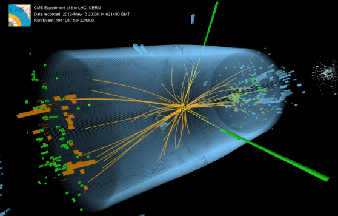
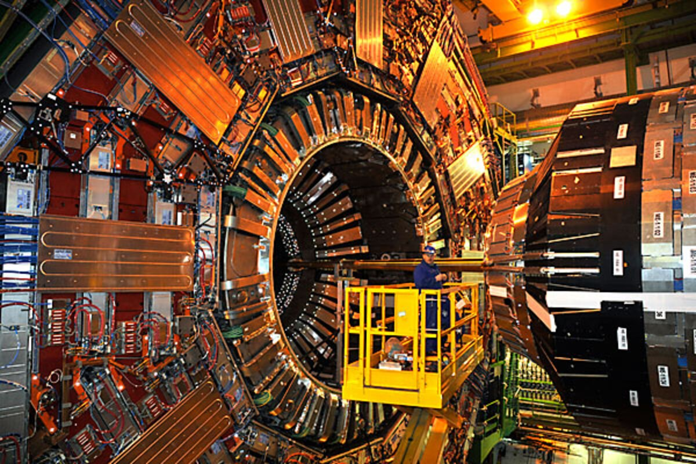
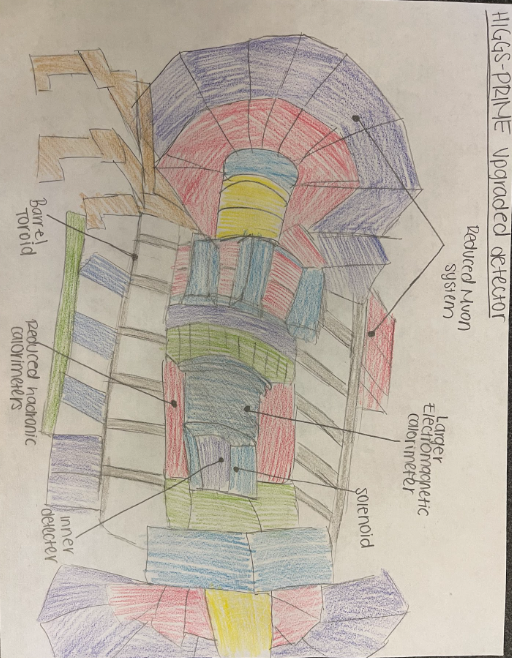
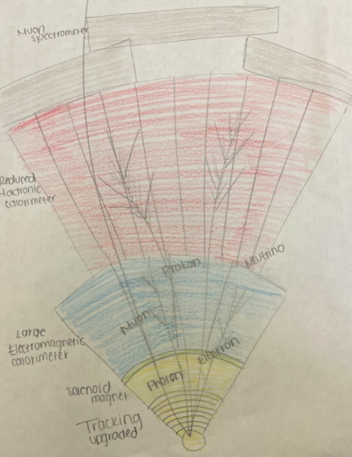
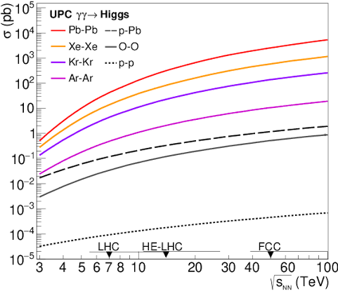

Project Overview
After attending a summer program on particle accelerators and taking physics, I couldn't stop thinking about how engineers design the machines and detectors that make discoveries like the Higgs boson possible. I wanted to keep learning way after the program ended.
That curiosity led me to start this project, where I explored ways to redesign parts of an accelerator and detector system to improve Higgs boson detection.
The Problem: Detecting the Higgs Boson
Detecting the Higgs boson is difficult because it is produced in only about one out of every billion proton-proton collisions and decays almost instantly into other particles. Engineers continue improving particle accelerators to create more collisions and collect higher-quality data, giving scientists a better chance of observing these rare events and making new discoveries.

Understanding the Accelerator & Detector
Particle accelerators use electric fields to speed protons up to nearly the speed of light, while powerful magnets keep the beams focused and steer them around the accelerator until they collide.
After the collision, detectors collect information about the particles, like where they traveled and how much energy they had. Scientists use that information to figure out what was created, including rare particles like the Higgs boson.

Engineering Design
Accelerator Improvements
I redesigned the accelerator to increase the chances of producing Higgs bosons by increasing its radius, allowing protons to reach higher energies while remaining stable. I also improved the beam focus to increase instantaneous luminosity, creating more frequent particle collisions and giving scientists more opportunities to observe rare Higgs boson events.
- Increased accelerator radius
- Improved beam focus
- Increased luminosity

Detector Improvements
I redesigned the detector to improve its ability to identify Higgs boson events after collisions occur. My design includes a higher-resolution electromagnetic calorimeter (ECAL) for more precise photon measurements, an improved tracking detector to better reconstruct particle paths, and enhanced photon identification to distinguish Higgs signals from background events.
- Higher-resolution ECAL
- Improved tracking detector
- Enhanced photon identification

Engineering Analysis & Calculations
Beam Steering
r = p / qB
This equation shows how magnets keep protons moving in a circular path. Increasing the magnetic field strength allows the accelerator to control higher-energy proton beams.
Luminosity
L = fN² / 4πA
Luminosity measures how often particle collisions occur. Reducing the beam area increases collision frequency, improving the chances of producing Higgs bosons.
Detector Efficiency
A higher-resolution electromagnetic calorimeter (ECAL) improves photon measurements, making Higgs boson events easier to distinguish from background collisions.

Figure 5. Example graph illustrating how reducing the beam area increases luminosity and improves the probability of detecting Higgs bosons.
Tradeoffs & Limitations
Making particle accelerators and detectors better isn't as simple as making everything bigger or more powerful. Every improvement comes with tradeoffs, like higher costs, more energy use, and greater engineering challenges. My redesign focuses on improving efficiency while keeping those real-world limitations in mind.
- Increasing the magnetic field improves beam steering but also increases energy demands and construction costs.
Results & Impact
My redesign is all about increasing the chances of detecting the Higgs boson. By improving beam focus, increasing luminosity, and designing a more accurate detector, the system could collect better data from particle collisions. While this is a conceptual design, it shows how small engineering improvements can make a big difference in scientific research.
Sources & References
The information and resources used throughout this project were gathered from scientific organizations, educational resources, and research materials related to particle physics, accelerators, and detectors.
- CERN. "The Higgs Boson." European Organization for Nuclear Research.
- CERN. "The Large Hadron Collider." European Organization for Nuclear Research.
- ATLAS Experiment. "The ATLAS Detector and Particle Detection Systems."
- Encyclopaedia Britannica. "Particle Accelerator."
- Vanderbilt University Summer Academy: "I'm Gonna Smash It! The Physics of Particle Accelerators & Detectors."
Thank you for exploring my project!